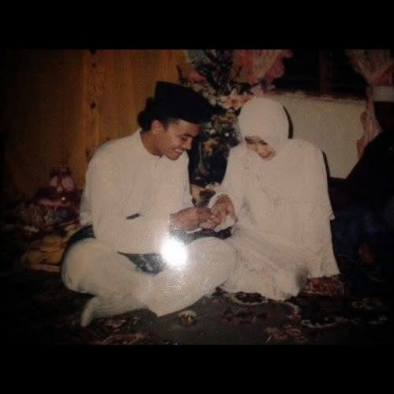
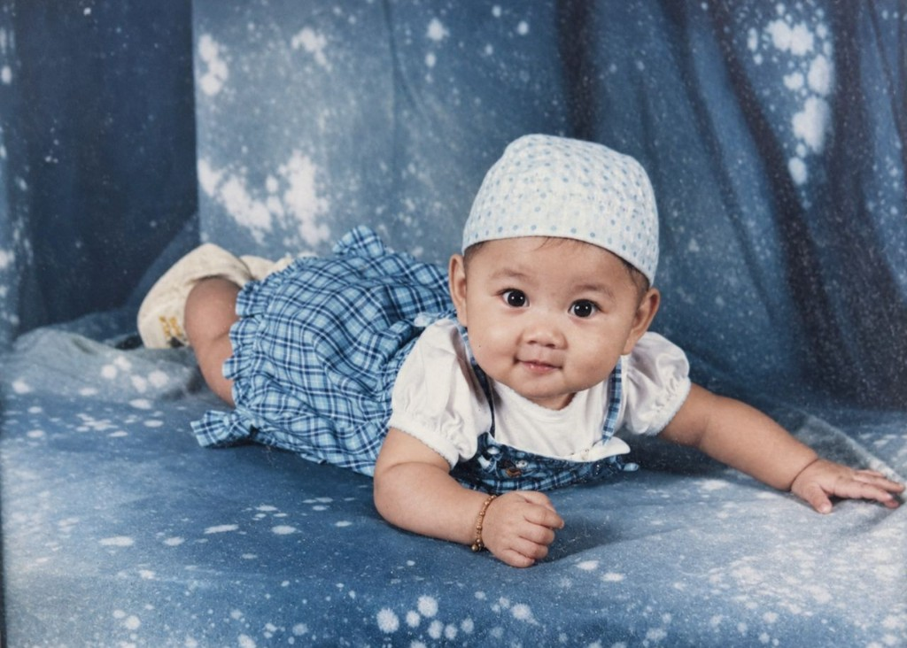
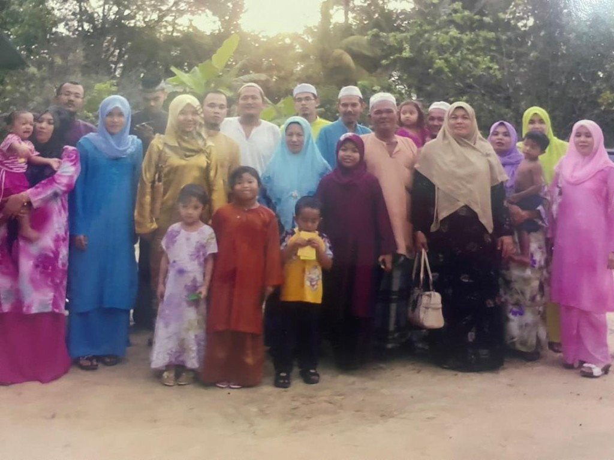
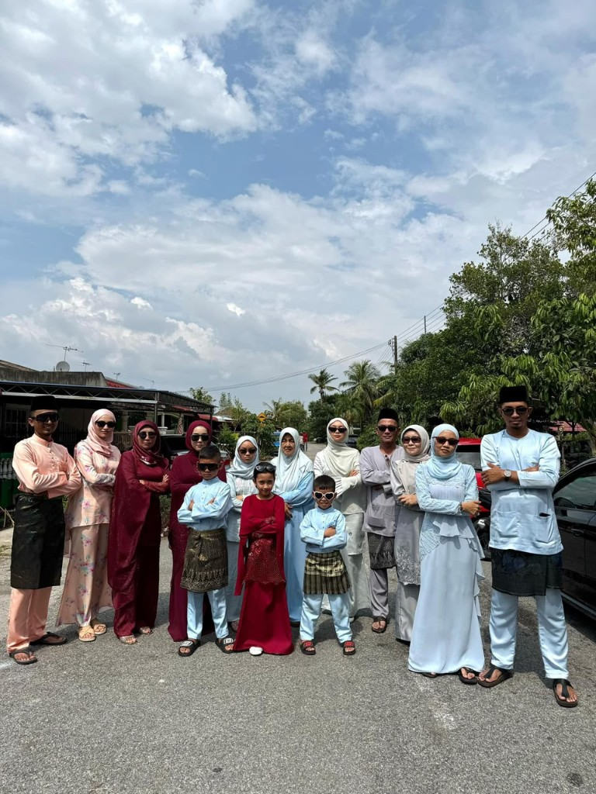
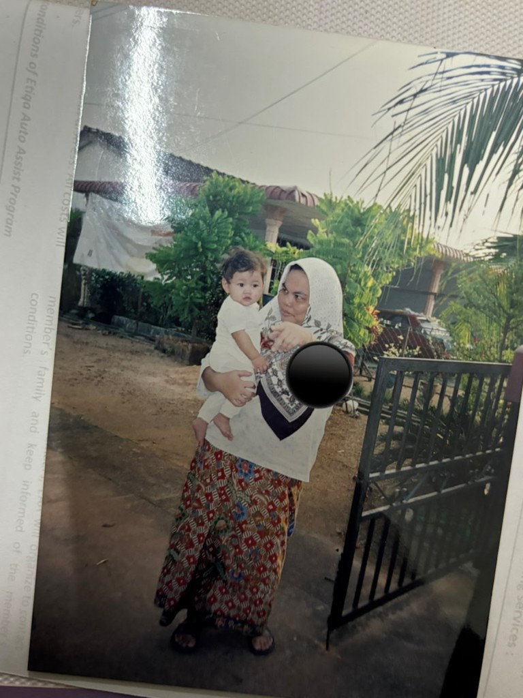
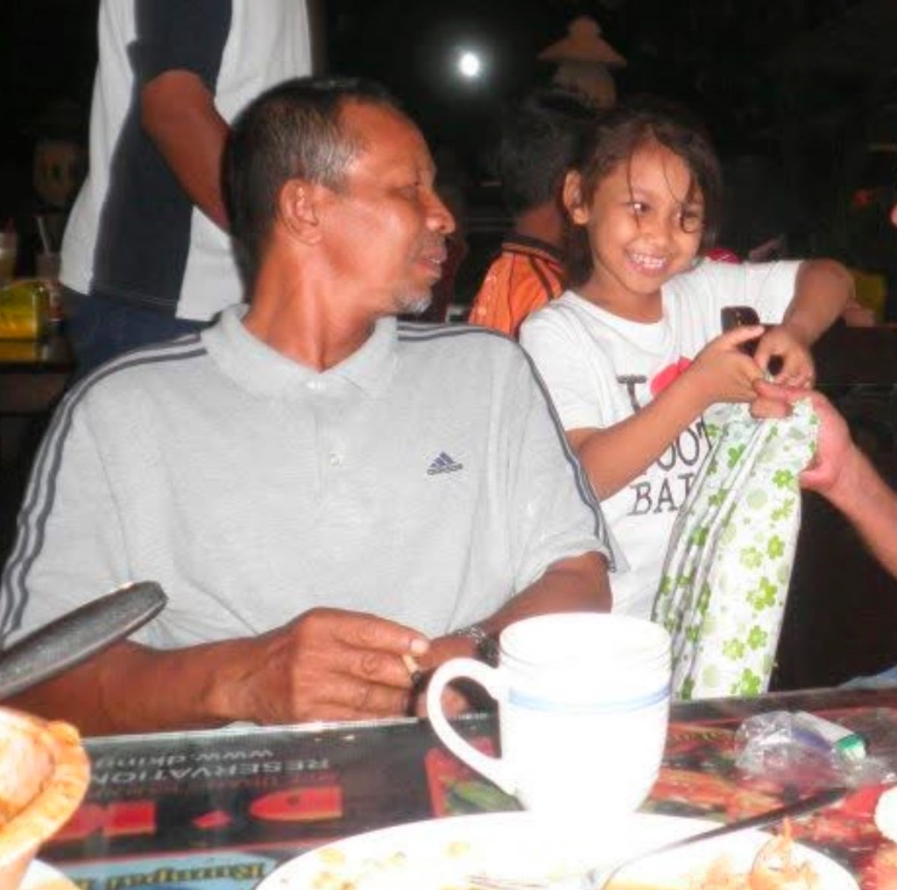
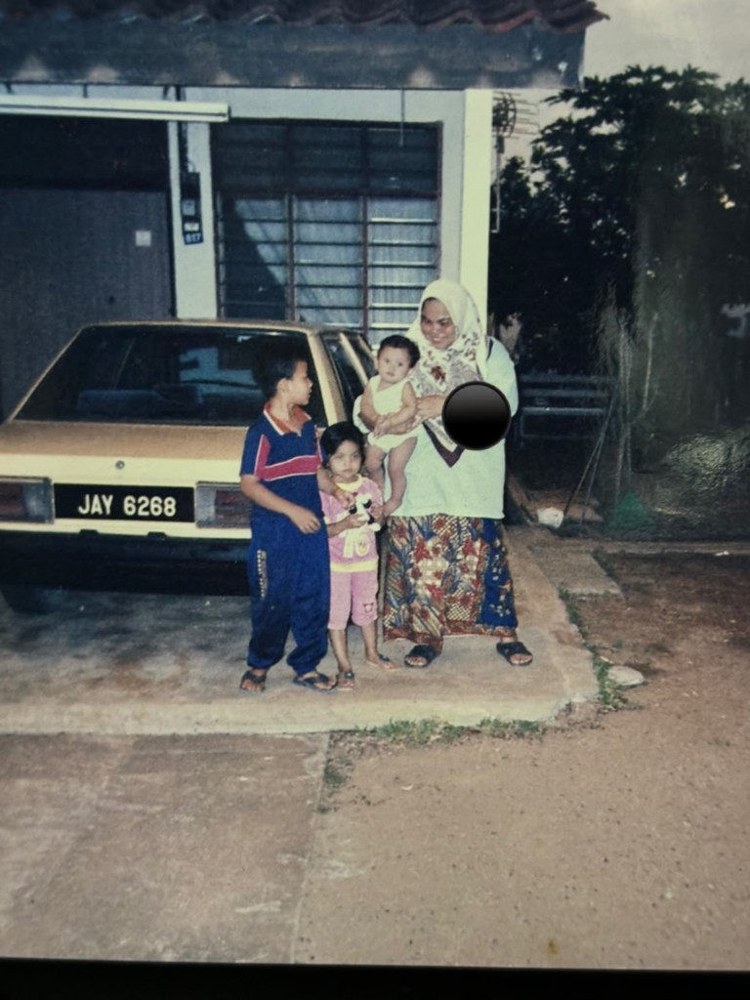
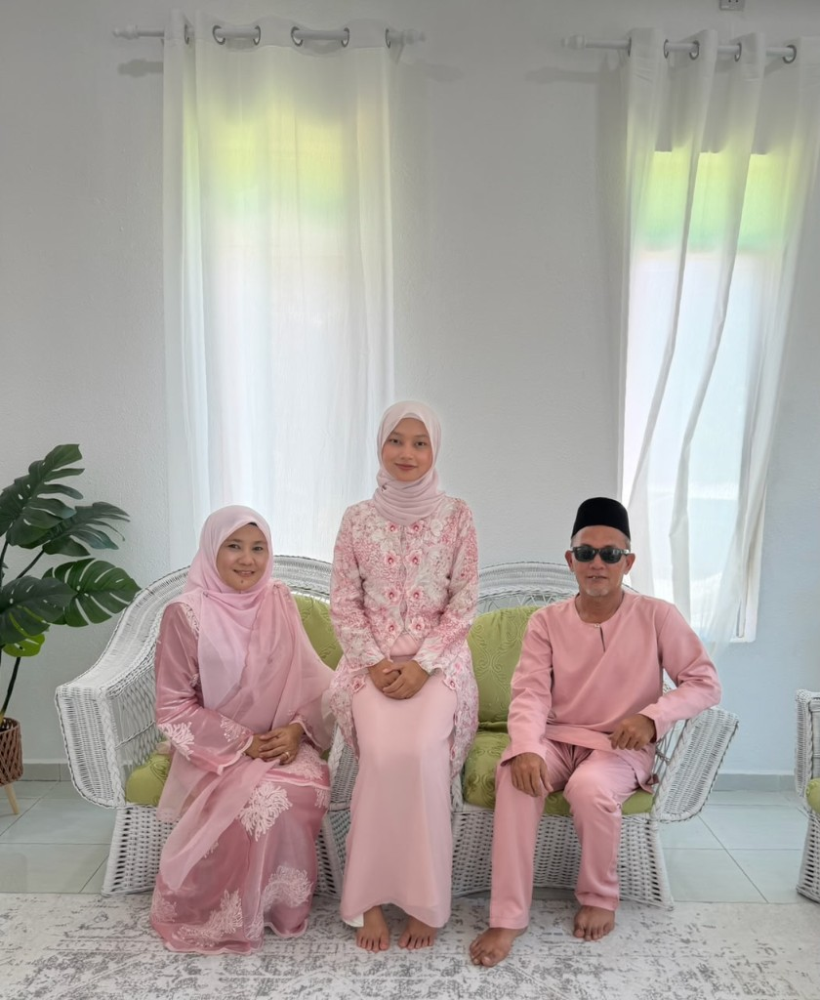

Meet My Parents
My family is the foundation of who I am today. Everything started with two people who decided to build a life together.
Married on 7 July 1996

And Then Came Me

About My Family
My parents are the two most important people in my life. They taught me values like kindness, hard work, patience and love. Everything I am today is because of the lessons, sacrifices and prayers they have given me.
| Member | Name |
|---|---|
| Father | Zulkiflee Noh |
| Mother | Masrina Abdul Rahman |
| Daughter | Nurin Damia binti Abdullah |
Abdul Rahman's Family
This is my mother's side of the family, the Abdul Rahman family. Big gatherings, warm laughter, and lots of cousins, this is where my mom's roots are, and where many of my childhood memories were made.

Family gatherings like this remind me how lucky I am to be surrounded by so much love. From aunties and uncles to cousins of all ages, each one of them has played a part in shaping my happiest childhood memories.
Zul's Family
This is my father's side of the family, the Zul family. Strong, loyal, and always together, especially during festive seasons. Whether it is Hari Raya or simple weekend visits, gatherings with this side of the family always feel warm and complete.

Both sides of my family, Abdul Rahman's and Zul's, make me feel grateful every single day. Family is, and always will be, my greatest blessing.
Caregiver's Family
"It's not about blood. It's about the people who become family."
I have been cared for by my babysitter's family since I was just six days old. What began as childcare became a lifelong bond that shaped my childhood and who I am today. My mama, Hanani, and her husband, Haris, welcomed me with love and kindness, treating me as part of their family.



Although both of them have since passed away, the connection we built never disappeared. I remain close with their family, and their home continues to feel like a second home to me. I still visit, spend time with them, and sometimes stay over, just as I always have. They are not related to me by blood, but they will always be family in my heart.

"Some bonds are not inherited, they are built through years of love, care, and shared memories."